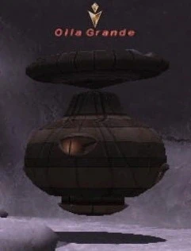
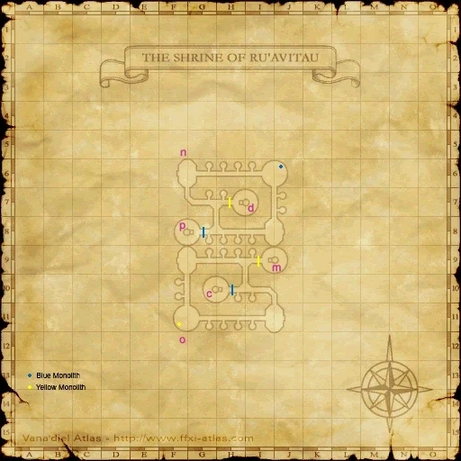

Level 75 reference · Zenith rules
|
Job: White Mage Notorious Monster |
 Image source |


|
Zone |
Level |
Drops |
Steal |
Spawns |
Notes | ||||||
|
85 |
1 |
A, M
| |||||||||
|
HP = Detects Low HP; M = Detects Magic; Sc = Follows by Scent; T(S) = True-sight; T(H) = True-hearing JA = Detects job abilities; WS = Detects weaponskills; Z(D) = Asleep in Daytime; Z(N) = Asleep at Nighttime | |||||||||||


Image source
Notes:
- Spawned when Olla Media is defeated
- Killable by 12 level 71 players
- Additional Effect: Dispel
- Casts Banish III, Banishga III, Blink, Stoneskin, Flash, Diaga II, etc.
Adapted from Eden Wiki: Olla Grande · Contributors and history · CC BY-SA 4.0. Revision 1958. Layout, links and optional background text adapted for Zenith.